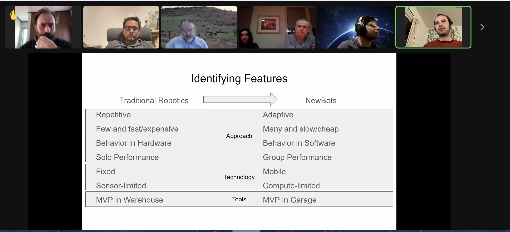
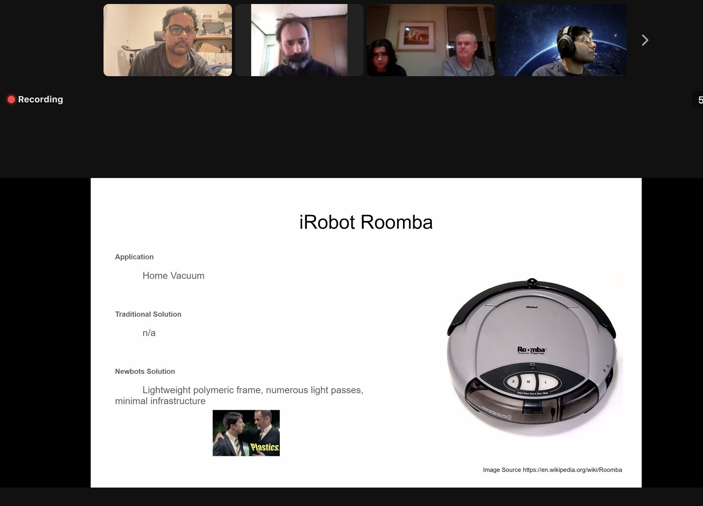

Today's featured yak: Chris Butler (@chrizbot) - Chaotic good product manager https://www.yakcollective.org/members/100006/#20220101
Check out @randylubin's new post, "Gaming Like It’s 1926". https://blog.randylubin.com/gaming-like-it-s-1926
Today's featured yak: Tom Critchlow (@tomcritchlow) https://www.yakcollective.org/members/100063/#20220102
Check out @antlerboy's new post, "When were you last put on a waiting list?". https://antlerboy.medium.com/when-were-you-last-put-on-a-waiting-list-ae90270f0ded?source=rss-97852f5a56ae------2
Today's featured yak: Zhan Li (@thezhanly) - Scenarios, Foresight, Futurist Studies & PE/VC https://www.yakcollective.org/members/100072/#20220103
Kicking off Year 2 of the rover project in a few minutes with @not_replica as new First Speaker

Today's featured yak: Jordan Peacock (@hewhocutsdown) - CEO, Becoming Machinic; Founder, Sortilege https://www.yakcollective.org/members/100036/#20220104
Check out @antlerboy's new post, "How does the signal of demand get through to your organisation?". https://antlerboy.medium.com/how-does-the-signal-of-demand-get-through-to-your-organisation-5b93a60467e8?source=rss-97852f5a56ae------2
Today's featured yak: Prashant Gandhi https://www.yakcollective.org/members/100066/#20220105
Check out @anthilemoon's new post, "Become more calm and conscious with Kai Koch, co-founder of Ahead". https://nesslabs.com/ahead-featured-tool?utm_source=rss&utm_medium=rss&utm_campaign=ahead-featured-tool
Today's featured yak: Ben Mosior (@HiredThought) - curator of strange and interesting methods https://www.yakcollective.org/members/100080/#20220106
Check out @tomcritchlow's new post, "January 2022 - Map of Inquiry". http://tomcritchlow.com/2022/01/06/jan-22-map-inquiry/
Today's featured yak: Maggie Appleton https://www.yakcollective.org/members/100056/#20220107
YakRover 2022 Kickoff Meeting up on YouTube. Interesting discussion about Newbotics, Robot Brain-Body Architecture, Landing Rovers with Model Rockets 🚀, calculating Star Dates and more
https://youtu.be/xjra2ZeAsMU #yakbot
Check out @antlerboy's new post, "Transduction — leading transformation — Issue #32". https://antlerboy.medium.com/transduction-leading-transformation-issue-32-102f20dd3b63?source=rss-97852f5a56ae------2
Today's featured yak: Jay Kalawar https://www.yakcollective.org/members/100070/#20220108
Check out @p_millerd's new post, "Do We Really Want Happiness? Lessons from Socrates, Kahneman & Maslow". https://think-boundless.com/happiness/?utm_source=rss&utm_medium=rss&utm_campaign=happiness
Today's featured yak: Darren Kong (@varietalxyz) https://www.yakcollective.org/members/100025/#20220109
Check out @antlerboy's new post, "What’s your Facilitrainer Inheritance?". https://antlerboy.medium.com/whats-your-facilitrainer-inheritance-edf6ca84d13e?source=rss-97852f5a56ae------2
Today's featured yak: Praful Mathur https://www.yakcollective.org/members/100075/#20220110
Today's featured yak: Sumit Paul-Choudhury https://www.yakcollective.org/members/100081/#20220111
Check out @anthilemoon's new post, "Attentional bias: the invisible puppeteer behind our decisions". https://nesslabs.com/attentional-bias?utm_source=rss&utm_medium=rss&utm_campaign=attentional-bias
Today's featured yak: Phil Wolff (@evanwolf) https://www.yakcollective.org/members/100053/#20220112
Check out @antlerboy's new post, "It’s just noise!". https://antlerboy.medium.com/its-just-noise-6d71aea4fabe?source=rss-97852f5a56ae------2
Check out @anthilemoon's new post, "The art and science of abstract thinking". https://nesslabs.com/abstract-thinking?utm_source=rss&utm_medium=rss&utm_campaign=abstract-thinking
Today's featured yak: Chris Reid (@careid0) https://www.yakcollective.org/members/100087/#20220113
Today's featured yak: Scott Garlinger (@scott_garlinger) - Director of Business Development, Groupmuse; A.I. Operator, Dynasty https://www.yakcollective.org/members/100022/#20220114
Check out @antlerboy's new post, "Transduction — leading transformation — Issue #33". https://antlerboy.medium.com/transduction-leading-transformation-issue-33-54afa1f9746?source=rss-97852f5a56ae------2
Today's featured yak: Vlad Mehakovic (@vladiim) https://www.yakcollective.org/members/100077/#20220115
Today's featured yak: Claire Peters https://www.yakcollective.org/members/100082/#20220116
Check out @antlerboy's new post, "When have you seen someone change their position — and suddenly change their perspective?". https://antlerboy.medium.com/when-have-you-seen-someone-change-their-position-and-suddenly-change-their-perspective-bdde9c44ca1f?source=rss-97852f5a56ae------2
Today's featured yak: Justice (@being_on_line) - everything digital https://www.yakcollective.org/members/100048/#20220117
Check out @chrizbot's new post, "Strategy is now". https://medium.com/agileinsider/strategy-is-now-5c0201c7e10a?source=rss-ba6349c9c628------2
Check out @evanwolf's new post, "Why do you care about identity?". https://wider.team/2022/01/18/phil-cares-about-identity/
Today's featured yak: Harry Pottash - Philosopher & Investor https://www.yakcollective.org/members/100084/#20220118
Check out @randylubin's new post, "Story Synth Visual Refresh". https://blog.randylubin.com/story-synth-visual-refresh
Check out @antlerboy's new post, "Looking where we see". https://antlerboy.medium.com/looking-where-we-see-d4b7445f6e64?source=rss-97852f5a56ae------2
Today's featured yak: Vinay Débrou (@vinaydebrou) https://www.yakcollective.org/members/100019/#20220119
Check out @anthilemoon's new post, "From knowledge-management to knowledge-creation with the founders of RemNote". https://nesslabs.com/remnote-featured-tool?utm_source=rss&utm_medium=rss&utm_campaign=remnote-featured-tool
Today's featured yak: Charlie Bilsland (@charliebilsland) - Space / Strategy / Commercials https://www.yakcollective.org/members/100059/#20220120
Today's featured yak: Victor Hill https://www.yakcollective.org/members/100067/#20220121
Check out @antlerboy's new post, "Transduction — leading transformation — Issue #34". https://antlerboy.medium.com/transduction-leading-transformation-issue-34-9b740898cc96?source=rss-97852f5a56ae------2
Check out @antlerboy's new post, "Transduction — leading transformation — Issue #34". https://antlerboy.medium.com/transduction-leading-transformation-issue-34-62a25406a489?source=rss-97852f5a56ae------2
Today's featured yak: Benjamin Smith - Qualitative researcher https://www.yakcollective.org/members/100046/#20220122
Today's featured yak: Vaughn Tan (@vaughn_tan) https://www.yakcollective.org/members/100092/#20220123
Check out @sachinb91's new post, "#15 Ode to Freeway Exits". https://sachinsnotes.substack.com/p/15-ode-to-freeway-exits
Check out @p_millerd's new post, "Paul’s 2021 Annual Review – From Mexico to Taiwan to the US". https://think-boundless.com/2021annualreview/?utm_source=rss&utm_medium=rss&utm_campaign=2021annualreview
Today's featured yak: Nathan Chen (@iam_nChen) https://www.yakcollective.org/members/100015/#20220124
Please join us tomorrow January 25th 5:45 UTC for the first Yak Rover review on "Rover for Newbies", presented by @anurajenp --- here are the slides: https://docs.google.com/presentation/d/1YtmmXSZlU4JE1ruOgW-zZdgYQ9E_5K78ShbMAxCR-70/edit#slide=id.g1037a92bb10_0_484 #yakbot
Check out @antlerboy's new post, "What do you want to read from me?". https://antlerboy.medium.com/what-do-you-want-to-read-from-me-452e4e89796f?source=rss-97852f5a56ae------2
Check out @tomcritchlow's new post, "Quotebacks V1.1.4". http://tomcritchlow.com/2022/01/24/quotebacks-v1.1.4/
If you are curious about tomorrow's YakRover talk on "Rover for Newbies" by @anurajenp, checkout our YouTube channel for different rovers we built in 2021 - https://www.youtube.com/channel/UC9bngPbXMEZ8ivD1GHJ94aw #yakbot
Check out @randylubin's new post, "Story Synth Grant Program". https://blog.randylubin.com/story-synth-grant-program
Check out the latest edition of the Yak Talk newsletter, "Tonight! Rovers 101 Session". https://yakcollective.substack.com/p/tonight-rovers-101-session
Rovers 101 session coming up in a few hours! https://yakcollective.substack.com/p/tonight-rovers-101-session #yakbot
Today's featured yak: Martha Balaile (@MythologyStudio) https://www.yakcollective.org/members/100057/#20220125
Check out @antlerboy's new post, "Thriving in the space of service — for consultants, coaches, facilitators, business partners…". https://antlerboy.medium.com/thriving-in-the-space-of-service-for-consultants-coaches-facilitators-business-partners-213fa667e1d5?source=rss-97852f5a56ae------2
Today's featured yak: Alex Dobrenko (@Dobrenkz) - Improviser / Writer / Filmmaker https://www.yakcollective.org/members/100065/#20220126
Check out @chrizbot's new post, "Decision-Forcing Cases: Gaining experience without the hurt". https://medium.com/agileinsider/decision-forcing-cases-gaining-experience-without-the-hurt-217a4f846606?source=rss-ba6349c9c628------2
Replying to @yak_collective
2/ Second YakRover weekly meetup is up on YouTube. @not_replica, @maierfenster, @vgr, @jaschawilcox, and Brian Smith discuss RoverOS
https://www.youtube.com/watch?v=7RoVVsBByxk
Check out @tomcritchlow's new post, "Electric Tables V0.1". http://tomcritchlow.com/2022/01/26/electric-tables/
Check out @anthilemoon's new post, "Fostering authentic relationships in distributed teams with the co-founder of Remotion". https://nesslabs.com/remotion-featured-tool?utm_source=rss&utm_medium=rss&utm_campaign=remotion-featured-tool
Today's featured yak: Venkatesh Rao (@vgr) - Independent consultant https://www.yakcollective.org/members/100041/#20220127
Yak Collective Blockchain weekly call posted https://youtu.be/OegWsYTEVFk. This week’s topic was the Solana ecosystem and led by Kiran Pathakota. Calls open to Yak Collective members: http://yakcollective.org/join #yakbot
Today's featured yak: Drew Schorno (@dschorno) - Clown school graduate; Failed startup alumni https://www.yakcollective.org/members/100089/#20220128
Now reading, in the yak collective Friday online governance study group

Check out @antlerboy's new post, "Transduction — leading transformation — Issue #35". https://antlerboy.medium.com/transduction-leading-transformation-issue-35-2f3acf970c85?source=rss-97852f5a56ae------2
Today's featured yak: Nathan Acks (@nathan_acks) - Armchair futurist. Defense against the dark arts. https://www.yakcollective.org/members/100007/#20220129
Today's featured yak: Michael Colin (@divinix_chi) - Supply Chain; Logistics; Freight Tech https://www.yakcollective.org/members/100062/#20220130
Check out @antlerboy's new post, "Can you see the courtly rituals still at work in our organisations and management?". https://antlerboy.medium.com/can-you-see-the-courtly-rituals-still-at-work-in-our-organisations-and-management-d0953851979d?source=rss-97852f5a56ae------2
Today's featured yak: Rodrigo Pinto (@Rodrigo_plp) https://www.yakcollective.org/members/100083/#20220131
Delighted to have @jaschawilcox at Yak Rover to talk about the present and future of "New Bots". Please join us today Feb. 1st at 5:45 UTC! https://www.yakcollective.org/join/
Talking about trad bots vs. new bots in discussion led by @jaschawilcox

According to @jaschawilcox the killer feature of the Roomba was actually that it was made of plastic, which allowed the form factor to be shrunk down to domestic scale.
